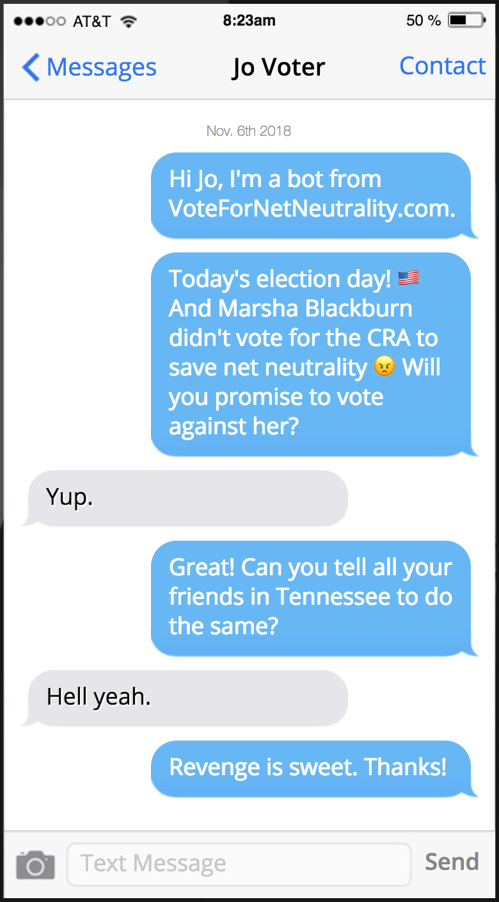

OR TEXT "VOTE" TO 384-387. PRIVACY POLICY
(An approximate dramatization.)
(The green ones are already voting for a CRA, so you should vote for them.)
(The fight starts in the Senate, but we'll launch a full list of House members once they start coming out for the CRA.)